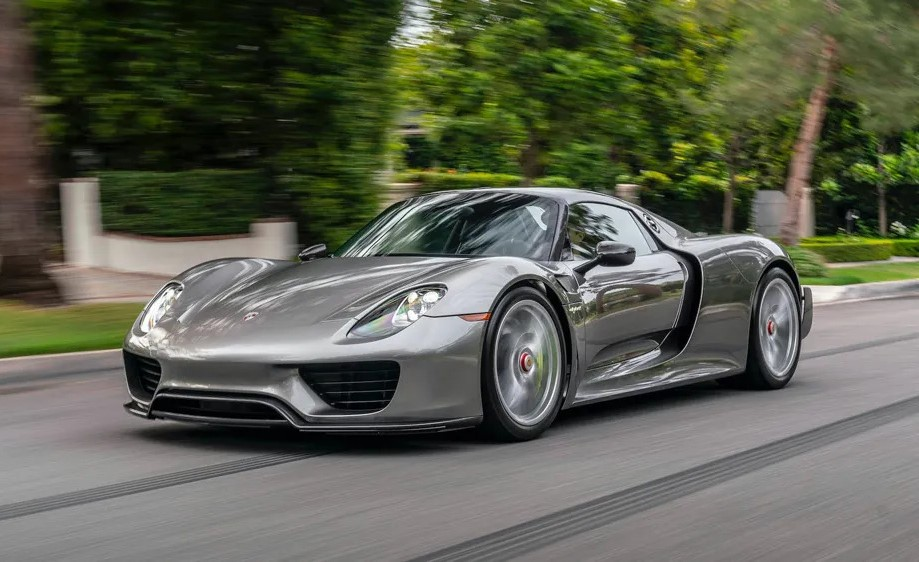
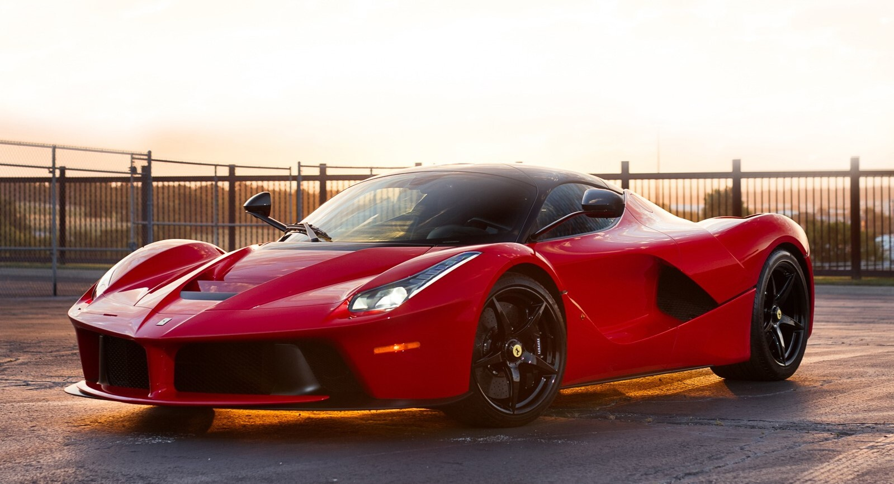
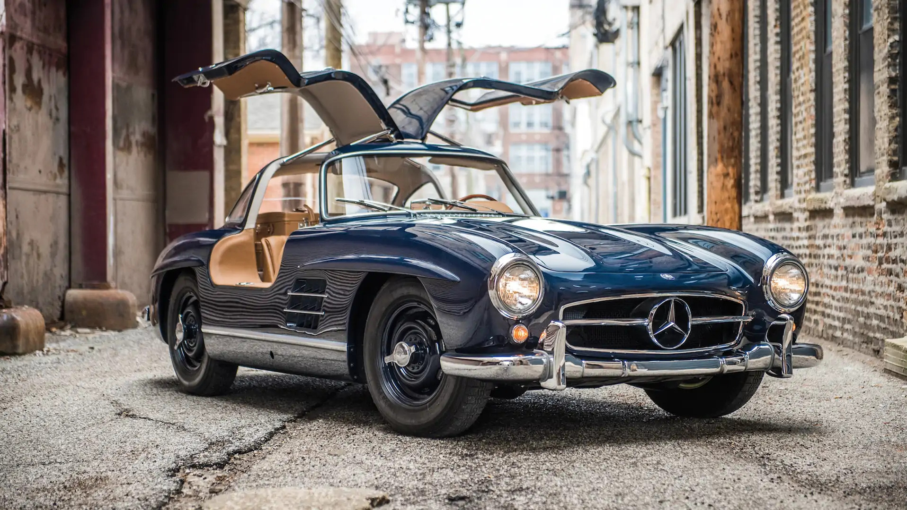

CarWiki
Welcome to CarWiki!! – your ultimate destination for everything automotive! Whether you're a seasoned car enthusiast or just starting to explore the world of automobiles, we’ve got you covered with in-depth articles on
a wide range of cars, from classic models to modern supercars. Dive into detailed specs, performance reviews, history, and innovations that make each car unique. Our user-friendly platform allows you to easily
navigate through categories, compare models, and stay up-to-date with the latest automotive news and trends.

Porsche 918 Spyder
The Porsche 918 Spyder is a highly advanced hybrid supercar that was produced by Porsche from 2013 to 2015. It's one of the most iconic models in Porsche's history, blending high-performance engineering with
cutting-edge hybrid technology. Read more

Mclaren P1
The McLaren P1 is another incredible hybrid hypercar, often compared to the Porsche 918 Spyder. Released by
McLaren in 2013, the P1 combines cutting-edge hybrid technology with McLaren's racing pedigree to create a hypercar that's built for both the track and the road. Read more

Ferrari LaFerrari
The Ferrari LaFerrari, released in 2013, is Ferrari's most ambitious and technologically advanced hypercar,
combining extreme performance with hybrid technology. It's considered one of the "Holy Trinity" of hybrid hypercars, alongside the Porsche 918 Spyder and McLaren P1. Read more

Aston Martin DB5
The Aston Martin DB5 is one of the most iconic and recognizable cars ever produced. First introduced in 1963
, the DB5 quickly became a symbol of luxury, performance, and timeless design. Read more

Mercedes-Benz 300SL Gullwing
The Mercedes-Benz 300SL Gullwing, produced from 1954 to 1957, is one of the most iconic and legendary
sports cars in automotive history. Known for its distinctive upward-opening "gullwing" doors and ground
-breaking technology, it set new standards for performance and design in the 1950s. Read more